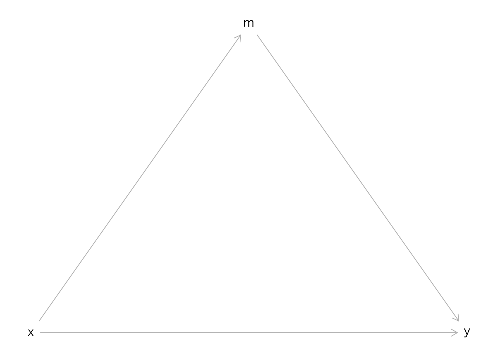
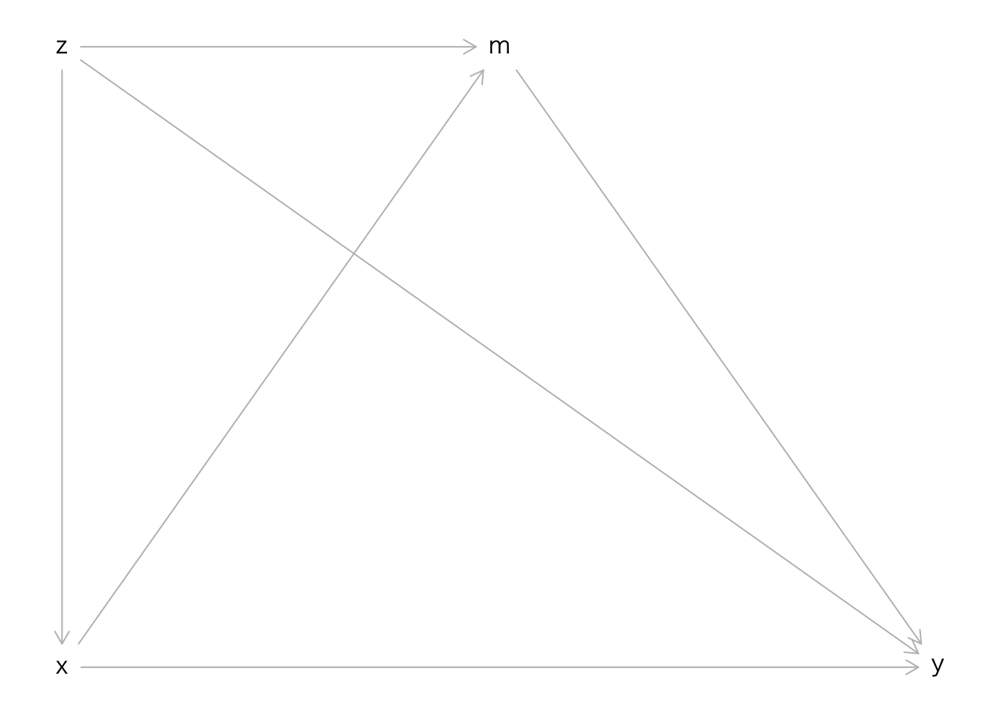
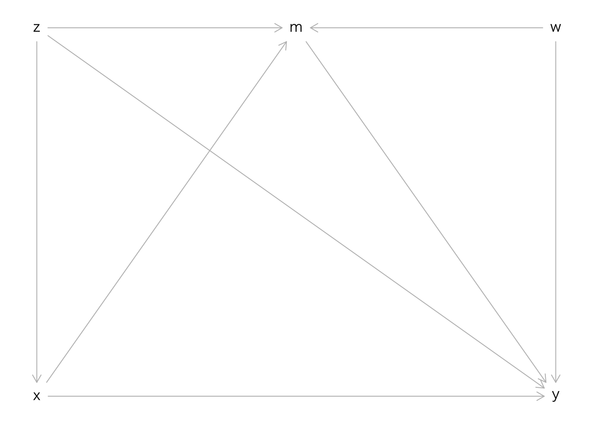
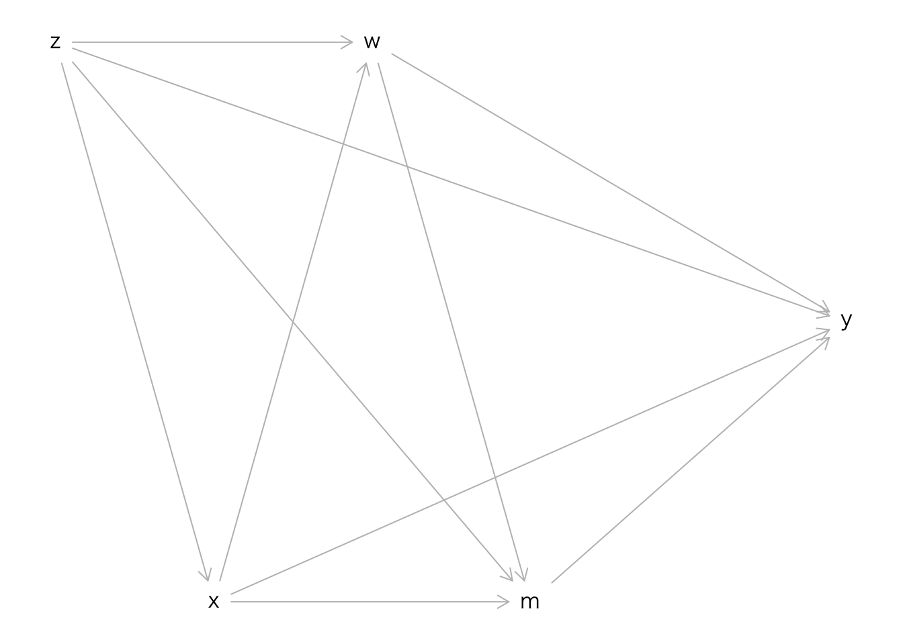

10 媒介分析
library(dagitty)
library(lavaan)10.1 Mediator
g <- dagitty('dag{
x [pos="0,1"]
y [pos="1,1"]
m [pos="0.5,0"]
x -> y;
x -> m -> y
}')
plot(g)
10.2 実際のデータ生成過程
g <- dagitty('dag{
x [pos="0,2"]
y [pos="2,2"]
m [pos="1,0"]
z [pos="0,0"]
x -> y;
x -> m -> y;
z -> x;
z -> m;
z -> y;
}')
plot(g)
g <- dagitty('dag{
x [pos="0,2"]
y [pos="2,2"]
m [pos="1,0"]
z [pos="0,0"]
w [pos="2,0"]
x -> y;
x -> m -> y;
z -> x;
z -> m;
z -> y;
w -> m;
w -> y;
}')
plot(g)
10.3 実際のデータ生成過程（3）
おそらく最も多くの場面では次のような変数間の関連構造が想定できるだろう．
g <- dagitty('dag{
x
y
m
z
w
z -> x;
z -> m;
z -> w;
z -> y;
x -> y;
x -> m;
x -> w;
w -> m;
w -> y;
m -> y;
}')
coordinates(g) <-
list(x = c(z = 0, x = 1, w = 2, m = 3, y = 5),
y = c(z = 0, x = 1, m = 1, w = 0, y = 0.5)
)
plot(g)